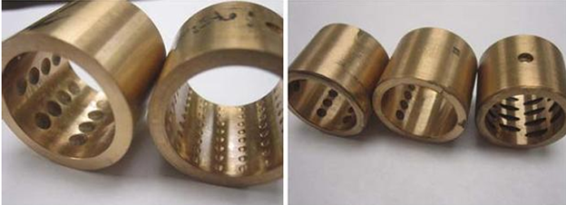

Project Description
This project focused on the full HVAC design of the 4th floor of the Engineering Laboratory and Research Center (ELRC) at the Lebanese American University. A comprehensive space-by-space analysis was conducted for laboratories, computer rooms, maker spaces, offices, and circulation areas. The work included detailed cooling and heating load calculations based on ASHRAE Fundamentals, accounting for building orientation, envelope construction, internal equipment loads, lighting power density, infiltration, and ventilation requirements. System components were selected and sized accordingly, including air-handling units, airflow rates, and ductwork. The project emphasized engineering accuracy, energy efficiency, and realistic operation in an educational and research environment.
Project Images
 Machined dimpled bushings vs etched dimpled bushings Average friction force for different texturing configurations at 0.1 MPa pressure and 900 rpm angular velocity
Average friction force for different texturing configurations at 0.1 MPa pressure and 900 rpm angular velocity
 Hydrodynamic load carrying capacity for different pitch dimensions and surface texture configurations of a piston ring at 0.6 m/s velocity and 50 N load
Hydrodynamic load carrying capacity for different pitch dimensions and surface texture configurations of a piston ring at 0.6 m/s velocity and 50 N load
 Effect of ultrasonic vibration and conditions of turning on the average surface roughness ùëÖùëé of the turned aluminum based MMC samples
Effect of ultrasonic vibration and conditions of turning on the average surface roughness ùëÖùëé of the turned aluminum based MMC samples